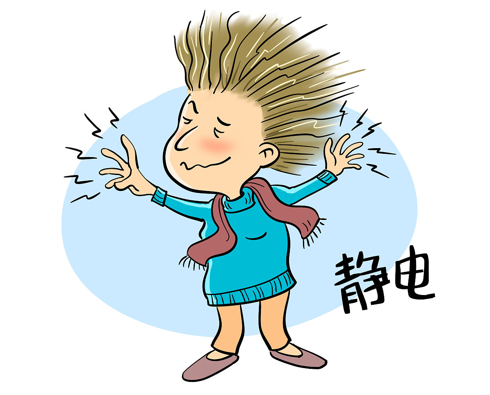
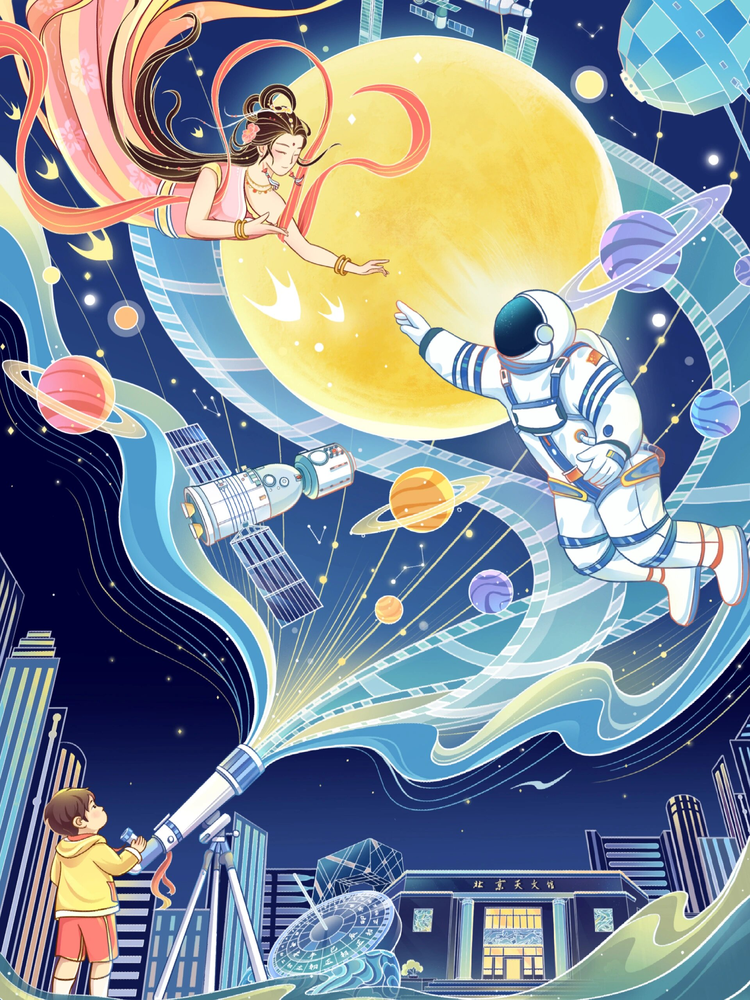
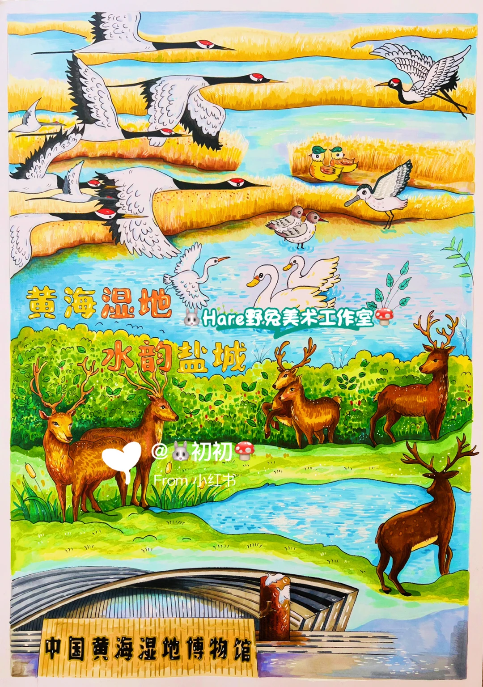

你有没有想过，未来的太阳能板可能像纸巾一样薄，还能卷进背包里？🎒 中国科学院的叔叔阿姨们真的做到了！他们发明了一种超级厉害的“叠层”电池，效率突破了28%，创造了世界纪录。
这种电池就像一块双层蛋糕。上面的“钙钛矿”层专门捕捉明亮的蓝光，下面的“有机”层则负责捡起剩下的红光。它们俩配合默契，一个防紫外线，一个挡湿气，简直是最佳搭档！🤝
为了找到完美的配方，科学家们尝试了无数次，终于让材料变得既高效又耐用。现在，它不仅能给手机充电，以后甚至可能飞到太空站去工作！🚀
少 年 科 普 周 刊
嗨，小科学家们！又到了我们每周见面的时间啦～这周世界上又发生了哪些有趣的科学新鲜事呢？ 快跟我一起，开启本周的奇妙科学之旅吧！记住：每一个"为什么"，都是打开科学大门的钥匙🔑
—— 你的大朋友 科普小编

💡 双层电池配合默契，效率超高。
你有没有想过，未来的太阳能板可能像纸巾一样薄，还能卷进背包里？🎒 中国科学院的叔叔阿姨们真的做到了！他们发明了一种超级厉害的“叠层”电池，效率突破了28%，创造了世界纪录。
这种电池就像一块双层蛋糕。上面的“钙钛矿”层专门捕捉明亮的蓝光，下面的“有机”层则负责捡起剩下的红光。它们俩配合默契，一个防紫外线，一个挡湿气，简直是最佳搭档！🤝
为了找到完美的配方，科学家们尝试了无数次，终于让材料变得既高效又耐用。现在，它不仅能给手机充电，以后甚至可能飞到太空站去工作！🚀
来源：科学网
你知道吗？有个河南姐姐高考拿了699分的高分，大家都以为她会选赚钱多的电脑专业。结果，她却选了最难的医学，还报名了清华！🤯 网友们急坏了，纷纷留言说：“别去啦，学医太苦太累，还会穷好多年！”
可是，这位姐姐心里藏着一个温暖的秘密。她的妈妈生病卧床很久，姐姐看着心疼，立志要治好妈妈的病。她像一株顽强的小草，不玩手机，刻苦学习，就为了实现这个梦想。💪 对她来说，救死扶伤比赚快钱更重要。
虽然很多人不理解，但爱心也涌来了！医院免费帮阿姨治病，清华也给姐姐发了全额奖学金。✨ 这个故事告诉我们，梦想是无价的。只要心怀善意，坚持初心，全世界都会为你加油喝彩！
📰 果壳网

你知道吗？杨贵妃吃的荔枝，可是用快马日夜兼程送来的！🐎 因为荔枝太娇气，摘下来没多久就会变褐、变质。古人为了这一口甜，真是操碎了心呀！
现在我们有超级科技啦！科学家叔叔阿姨们给荔枝穿上了“隐形防护服”。💊 他们研究出特殊方法，让荔枝果皮不再轻易变黑，就像给水果打了疫苗一样神奇。
原来，每一颗新鲜荔枝背后，都藏着无数次的实验和努力。🔬 科技不仅让美味更持久，还让历史故事有了新解法。下次吃荔枝时，别忘了这份现代智慧的礼物哦！
小科学家们，你们还想解锁哪种水果的秘密呢？🍓 保持好奇，去探索更多未知的乐趣吧！
📰 科学网

你有没有想过，夏天打开空调时，其实是在给地球“退烧”？最近，全国用电负荷第一次突破了15亿千瓦，创下了历史新高！这就像一个超级大胃王，一口气吃掉了平时好多倍的电量。😲
你猜怎么着？这些电大部分都被空调“抢”走了，占比接近三成！除了大家吹冷风，新能源汽车和超级计算机也在悄悄“吃电”。随着天气越来越热，气温每升高1度，电网的压力就大一分。⚡
为了保护我们的电器不“累趴下”，科学家们正在努力寻找更省电的方法。未来，我们或许能用更多绿色的能源，让天空更蓝，电费更省。下次开空调时，记得感谢那些幕后英雄哦！🌱
📰 果壳网

你想过吗？坐飞船去外星，能不能像看电影里那样，睡一觉就到啦？🚀 听起来太棒了！但现实可没那么简单，科学家说这其实很危险哦。
我们的身体可不是手机，不能随便“关机待机”。⚠️ 如果一直躺着不动，血液会变慢形成血栓，肌肉也会缩水变弱。就像你很久不走路，腿脚都会没力气呢！
那把人冻起来呢？❄️ 也不行！冰块会像小刀子一样刺破细胞，醒来可能就坏掉了。幸好大自然有“冬眠”的小动物做榜样，但它们也不是真的睡着了，中间还要醒醒呢。☀️
所以，星际旅行没那么容易。我们要先照顾好身体，才能去更远的地方探险！✊
📰 科普中国

你有没有想过，有些地方像巨大的迷宫，转一圈就能绕晕你？🧐 在中国最西边，藏着这样一个神奇的地方——喀什老城。
那里的街道弯弯曲曲，像蜘蛛网一样复杂。两边住着热情的人家，阳台上开满了鲜花。走在窄窄的小巷里，总能闻到烤羊肉的香味，听到快乐的歌声。✨
这里还是 famous 电影《追风筝的人》的取景地哦！古老的茶馆里，老爷爷们喝着茶，弹着乐器，仿佛在讲述过去的故事。每一块砖头都好像在眨眼说话呢。
虽然很容易迷路，但每一步都能发现惊喜。喀什就像一个充满魔法的盒子，等着你去打开探索！🚀
📰 中国国家地理

发布时间：2020年06月01日 文章出自：用户投稿 作者：
在我国的黄海南部，有一片湿地——江苏盐城黄海湿地，目前不仅是世界上最大的海岸型湿地，也是世界上面积最大的辐射沙洲群。在绵延580公里的海岸线上，它包括滩涂、湖泊、河流、沼泽，巨型沉积地貌，其中尤为独特的当数这里的沙洲群，庞大的沙洲群像一把海中巨扇，而沉积的淤泥和落潮沙痕如条条巨龙匍匐潜行，如参天大树和海上森林,神奇瑰丽、如梦如幻—— 与地球上大多数水下沙脊群不同，南黄海沙脊群主要分布在潮间带上，拥有涨潮为大海，落潮为巨滩的奇观精致。
2019年7月5日，盐城黄海湿地（申报名称为“中国黄（渤）海候鸟栖息地（第一期）”）被列入世界自然遗产名录。）
真的想象不出有比这更美的景观，更精彩的画面了。几乎每一道留痕都光泽莹莹，贮满了的淡泊和淳朴，也仿佛是汲足了海边盐土中的营养，又彰显着无限的生机萌动。这里没有农人勤恳的呵护，但是沙洲群自然形成的每一幅画面，无不都是柔情万种的歌咏和观者的惊叹。落潮后的沙洲自行成画，你必见又是好一派芸芸众生，或摇曳着尘世的沧桑，或笑迎温馨的阳光。一幅幅奇妙的图案，花木森林、山川河流、草原沙漠、日月流云、果树飞鸟，天下万物似乎尽在其中。富有艺术感的画面时而热烈奔放，时而“散漫”,洋溢着一种跌宕和绮丽的风光。而且其画面在潮水的每次冲刷下都会瞬间变幻，如童话中的奇幻世界，又似乎是一幅幅动态的蒙太奇效果，面对大自然如此的杰作又怎能不让人惊叹不已呢！
📰 中国国家地理